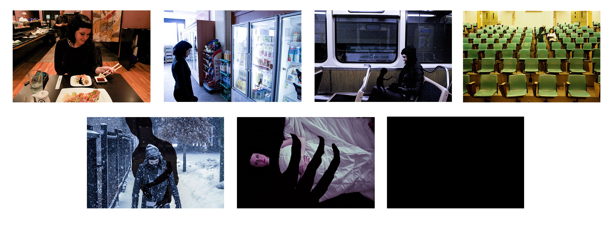

As a Multicultural Advisor for Ball State Housing and Residence Life, I had the unique opportunity to bring campus-wide awareness concerning issues of multiculturalism, diversity and social justice.
Broke was an interactive poverty simulation where participants entered as a single parent with no house, no job and only $1,000 to their name. Conceptualized by me, the simulation was presented alongside my fellow Multicultural Advisors to bring awareness to the experience of impoverished America.
This photo essay was intended to bring awareness to the realties of depression, one of our society's silent killers. It was featured in a campus Tunnel of Oppression, as a contribution from our staff.